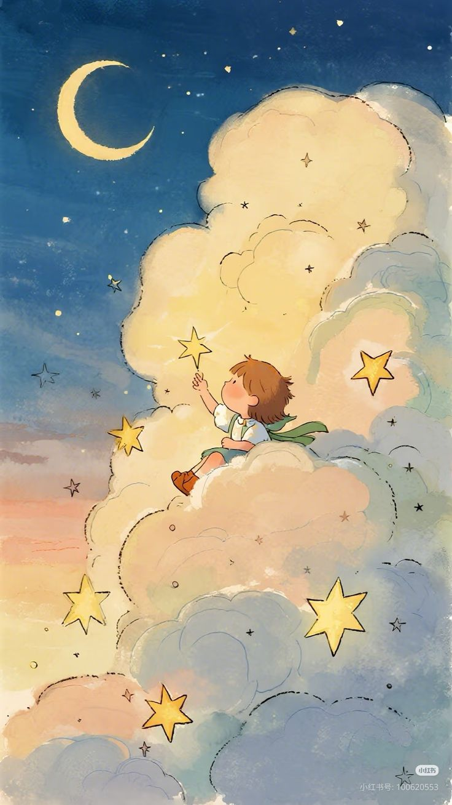

그렇지 않고 어떻게 텅 빈 화폭에서 그림을 볼 수 있겠는가.
어떻게 침묵 속에 앉아
결코 씌어진 적이 없는 노래를 들을 수 있겠는가.
또는 붉은 행성들을 응시하면서 우주 정거장을 떠올릴 수 있겠는가
어떤 사람들은 그들을 미치광이라 부르지만,
우리는 그들을 천재라고 부른다.
세상을 바꿀 수 있다고 생각할 만큼 미친 사람들만이
결국 세상을 바꿀 수 있기 때문에.
어느 고등학교 교사가 썼다고 전해지는 이 시는
애플 컴퓨터 사의 텔레비전 광고에 사용되었다.
서우리
- 2021년 5월~ 11월 UI/UX 개발자 과정 (970h)
- 2024년 7월~ 12월 프로젝트기반 풀스택 개발자 과정 (950h)
- Python, SpringFramework, SpringBoot, BootStrap, JSP, SERVLET, MYBATIS, JSTL, EL, MYSQL, JAVA
- Photoshop, Illustrator, STS, eclipse, VSCODE, IntelliJ, Pycharm 등
- 2003년 한솔고등학교 졸업
- 2009년 한국외국어대학교 폴란드어과 학사 졸업

프로젝트 목록
- 2021년 개인 포트폴리오
- 2024년 bookbug test 버전
- 2024년 bookbug final 버전